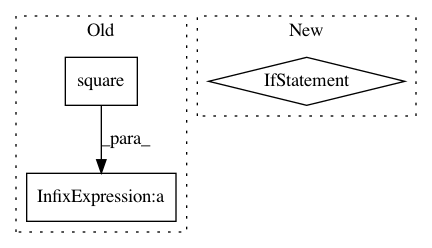

6436259ca4542e030697c05a72c942aa9aa3ced8,sonnet/src/rmsprop.py,ReferenceRMSProp,apply,#ReferenceRMSProp#Any#Any#,205
Before Change
momentum = tf.cast(self.momentum, update.dtype.base_dtype)
epsilon = tf.cast(self.epsilon, update.dtype.base_dtype)
ms.assign(tf.square(update) * (1. - decay) + ms * decay)
if self.centered:
mg.assign(update * (1. - decay) + mg * decay)
denominator = ms - mg + epsilon
After Change
momentum = tf.cast(self.momentum, update.dtype.base_dtype)
epsilon = tf.cast(self.epsilon, update.dtype.base_dtype)
if self.centered:
tf.raw_ops.ResourceApplyCenteredRMSProp(
var=parameter.handle,
mg=mg.handle,
ms=ms.handle,
mom=mom.handle,
lr=learning_rate,
rho=decay,
momentum=momentum,
epsilon=epsilon,
grad=update)
else:
tf.raw_ops.ResourceApplyRMSProp(
var=parameter.handle,
ms=ms.handle,
mom=mom.handle,
lr=learning_rate,
rho=decay,
momentum=momentum,
epsilon=epsilon,
grad=update)
In pattern: SUPERPATTERN
Frequency: 3
Non-data size: 3
Instances
Project Name: deepmind/sonnet
Commit Name: 6436259ca4542e030697c05a72c942aa9aa3ced8
Time: 2019-06-21
Author: petebu@google.com
File Name: sonnet/src/rmsprop.py
Class Name: ReferenceRMSProp
Method Name: apply
Project Name: GPflow/GPflow
Commit Name: bd1e9c04b48dd5ccca9619d5eaa2595a358bdb08
Time: 2020-01-31
Author: st--@users.noreply.github.com
File Name: gpflow/kernels/linears.py
Class Name: Linear
Method Name: K_diag
Project Name: GPflow/GPflow
Commit Name: bd1e9c04b48dd5ccca9619d5eaa2595a358bdb08
Time: 2020-01-31
Author: st--@users.noreply.github.com
File Name: gpflow/kernels/misc.py
Class Name: Coregion
Method Name: K_diag